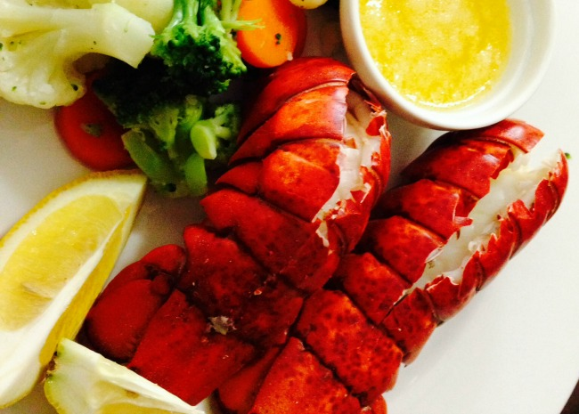

Lobster

Description
Steamed lobster tails with a hint of beer. Goes great with melted butter, lemon juice and garlic.
Ingredients
- 2 whole lobster tail
- 1/2 (12 fluid once) can beer
Steps
- In a medium saucepan, over medium heat, bring the beer to a boil.
- If lobster tails are still in the shell, split the shell lengthwise first.
- Place a stteamer basket on top of the saucepan. Place thawed lobster tails in basket and cover. Reduce heat and simmer for 8 minutes.